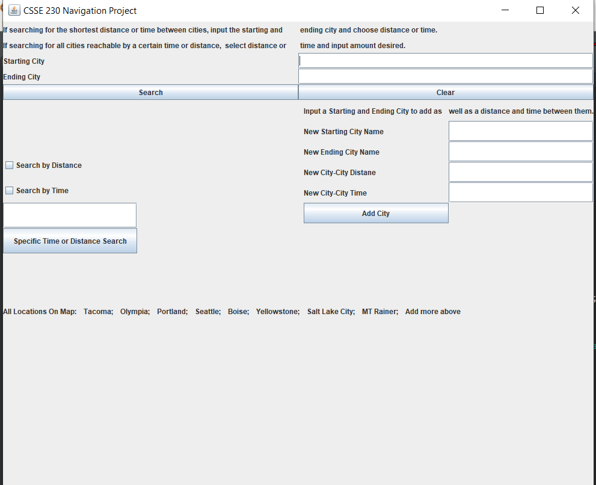
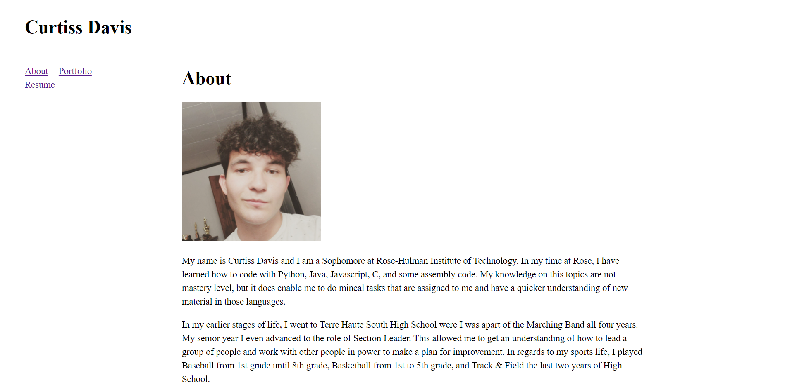

Portfolio
-
CSSE230-AbsentTravel-Agency
In this project, we were tasked with creating a navigation tool that allowed the user to find the shortest route between two locations.
-
CSSE280 Portfolio Website
In this project, I was tasked with creating a website that could be used as my personal portfolio.